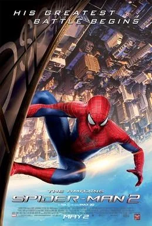
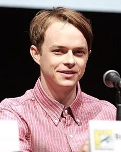
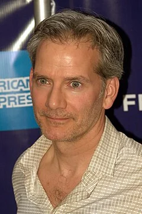
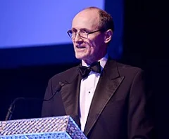
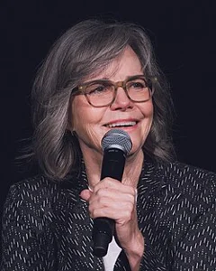

The Amazing Spider-Man 2 (2014)
| Movie | Release Date | Poster |
|---|---|---|
| The Amazing Spider-Man 2 PG-13 · 2h 22m · action · thriller · teen |  |
| Trailer |
|---|
| Rotten Tomatoes | Metacritic | IMDb |
|---|---|---|
| 50% | 53/100 | View on IMDb |
| Overview |
|---|
The Amazing Spider-Man 2 is a 2014 American superhero film based on the Marvel Comics character Spider-Man. The sequel to The Amazing Spider-Man (2012), it was directed by Marc Webb and written by Alex Kurtzman, Roberto Orci, and Jeff Pinkner from a story by Kurtzman, Orci, Pinkner and James Vanderbilt. Andrew Garfield stars as Peter Parker / Spider-Man, alongside Emma Stone, Jamie Foxx, Dane DeHaan, Campbell Scott, Embeth Davidtz, Colm Feore, Paul Giamatti and Sally Field. In the film, Peter tries to protect his girlfriend, Gwen Stacy, as he investigates his parents' death while also encountering the supervillain Electro and his childhood friend Harry Osborn. Full plot (spoilers)Richard Parker , a scientist who left Oscorp , records a video message to explain his disappearance. He and his wife Mary flee aboard a private jet, which is soon hijacked by an assassin. The jet crashes and kills both Richard and Mary. Years later, Richard and Mary's son, Peter, continues to fight crime as the vigilante Spider-Man . After apprehending the Russian criminal Aleksei Sytsevich , Peter attends his high school graduation. He is dating Gwen Stacy but is torn by guilt, having promised Gwen's late father that he would avoid her to keep her safe. Due to Peter's reservations about the relationship, Gwen breaks up with him. A few months later, Peter's childhood friend, Harry Osborn , returns home to see his dying father, Norman Osborn , the CEO of Oscorp . Norman explains that his fatal illness is genetic and that Harry will soon begin having symptoms. Norman dies soon after, and Harry inherits Oscorp. While working in an Oscorp laboratory, mild-mannered electrical engineer Max Dillon accidentally falls into a tank of genetically engineered electric eels , causing him to mutate and gain electric abilities. Unaware of the extent of his power, Max wanders into Times Square , where he inadvertently causes a power outage. Peter arrives and helps the police apprehend Max, who is then incarcerated at Ravencroft Institute . Gwen tells Peter that she will move to England if she earns a scholarship to Oxford University . The first symptoms of Harry's illness begin showing, and he uses information his father gave him to deduce that Spider-Man's blood could save him. He asks Peter, who has been selling photos of Spider-Man to the Daily Bugle , to help him find Spider-Man. Peter is unsure what effects his blood would have on Harry, but is worried it could cause a dangerous mutation. Disguised as Spider-Man, Peter refuses to give blood to Harry, which enrages him. The vice president of Oscorp, Donald Menken, frames Harry for covering up Max's accident and takes control of the company. Harry offers to liberate Max, who now calls himself "Electro", in exchange for getting Harry back inside the Oscorp building; Max agrees. Upon returning to Oscorp, Harry forces Menken to inject him with venom from genetically altered spiders. The venom mutates Harry and degrades his sanity. Meanwhile, Peter finds his father's video message, which reveals that his parents had to flee because Richard refused to collaborate with Norman on the creation of biogenetic weapons. Gwen is offered the Oxford scholarship, after which Peter professes his love for her and decides to move to England with her. Max causes a power outage at a power station. Peter and Gwen arrive and overload Max's body with electricity, killing him. Harry arrives riding a mechanized glider and wearing an armored suit equipped with weapons, and discovers that Peter is Spider-Man. Swearing vengeance, he takes Gwen to the top of a clock tower. Peter subdues Harry but is unable to stop Gwen from falling to her death. Wracked by guilt and sorrow, Peter ends his career as Spider-Man. Five months later, Harry is incarcerated at Ravencroft. When his associate, Gustav Fiers , visits him, Harry orders Fiers to break Sytsevich out of prison and provide him with Oscorp weaponry. Equipped with an electromechanical suit of armor, Sytsevich dubs himself "The Rhino" and rampages through the streets. Peter, re-inspired after watching a video of Gwen's graduation speech, returns to confront him as Spider-Man. |
| Actor | Character | Photo |
|---|---|---|
| Andrew Garfield | Peter Parker / Spider-Man A college student who developed spider-like abilities after being bitten by a genetically-modified spider, which he uses to fight crime as the masked vigilante Spider-Man. | No photo |
| Emma Stone | Gwen Stacy Peter's girlfriend. | No photo |
| Jamie Foxx | Max Dillon / Electro An Oscorp electrical engineer who becomes a powerful electrokinetic being. |  |
| Dane DeHaan | Harry Osborn / Green Goblin Peter's childhood friend and the son of Norman Osborn . |  |
| Campbell Scott | Richard Parker Peter's father. |  |
| Embeth Davidtz | Mary Parker Peter's mother. |  |
| Colm Feore | Donald Menken Vice president of Oscorp. |  |
| Paul Giamatti | Aleksei Sytsevich / The Rhino A criminal who is captured by Spider-Man and later freed from prison by Harry. | |
| Sally Field | May Parker Peter's aunt. |  |
| Martin Sheen | Uncle Ben | No photo |
| Chris Cooper | Norman Osborn | No photo |
| Felicity Jones | Black Cat | No photo |
| B. J. Novak | Alistair Smythe | No photo |
| Denis Leary | George Stacy | No photo |
| J.D. Walsh | – | No photo |
| Marton Csokas | – | No photo |
| Sarah Gadon | – | No photo |
| Stan Lee | – | No photo |
| Shailene Woodley | Mary Jane Watson | No photo |
| Chris Zylka | – | No photo |
| Lucas Till | – | No photo |
| James Colby | – | No photo |
| Bill Heck | – | No photo |
| Charlie DePew | – | No photo |
| Detail | Value |
|---|---|
| Directed by | Marc Webb |
| Written by | Alex Kurtzman, Roberto Orci, Jeff Pinkner |
| Produced by | Avi Arad |
| Music by | Hans Zimmer, Junkie XL |
| Cinematography | Daniel Mindel |
| Edited by | Pietro Scalia |
| Production companies | Columbia Pictures, Marvel Entertainment |
| Distributed by | InterCom, Sony Pictures, Netflix |
| Running time | 142 minutes |
| MPAA rating | PG-13 |
| Budget | Not available |
| Box office | $709 million |
Overview, plot, and cast descriptions are from Wikipedia (CC BY-SA 4.0). Credits, ratings, and box office are from Wikidata.